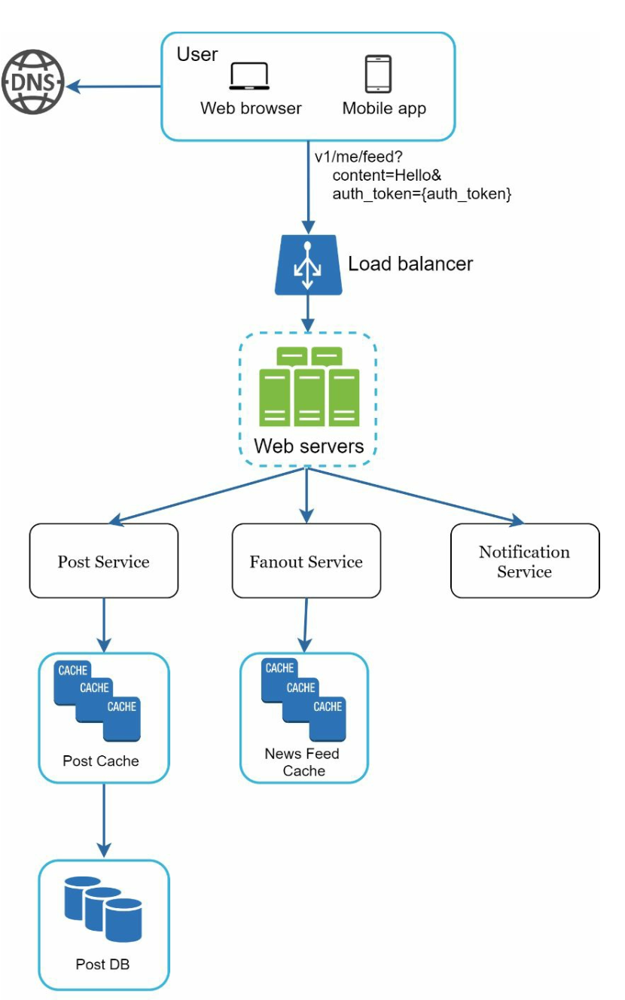
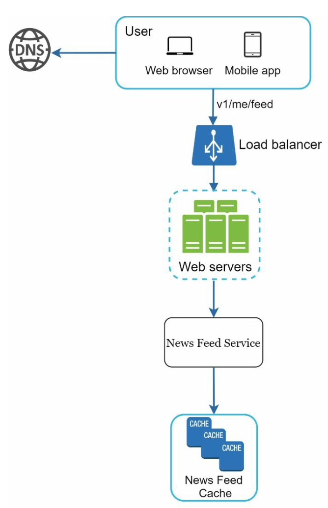
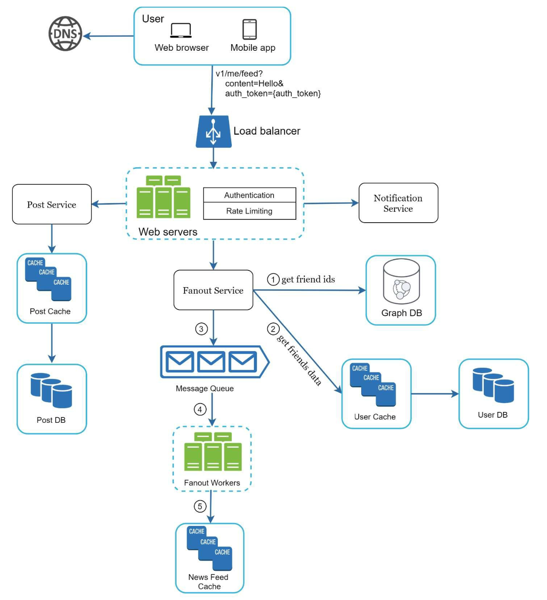
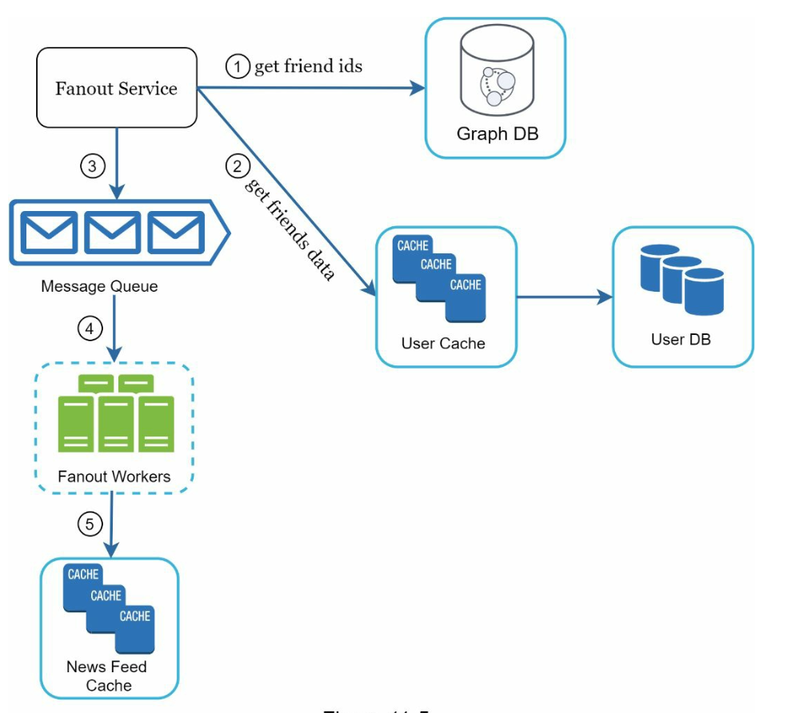
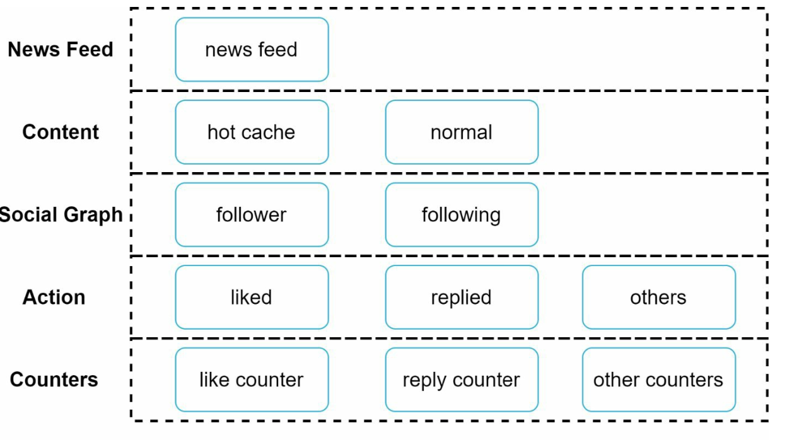

Design a News Feed System
Facebook feed, Instagram feed, Twitter timeline — sab ek hi problem hain: post publish karo aur friends ke feed tak fast pahunchao. Fanout on write vs read, celebrity problem aur 5-layer cache — sab yahan.
Introduction
News feed ek constantly update hone wali list hai — status updates, photos, videos, links — jo aapke friends/connections ne post kiye hain. Facebook news feed, Instagram feed, Twitter (X) timeline sab isi ke examples hain. Problem simple lagti hai, lekin jab ek user ke 5,000 friends hon aur 10M log roz feed khole, tab "kisko kab kya dikhana hai" ek serious distributed systems problem ban jaata hai.
Step 1: Requirements aur scope
| Question | Answer |
|---|---|
| Platform | Web + mobile app dono |
| Features | Post publish karna, aur friends ke posts feed mein dekhna |
| Sorting | Reverse chronological (naya pehle) — ranking ko simplicity ke liye out of scope rakha |
| Friends limit | Max 5,000 friends per user |
| Traffic | 10 million DAU |
| Content | Text, images, videos |
Numbers ka matlab
Agar ek user ke 5,000 friends hain aur wo post karta hai, to fanout on write mein ek post = 5,000 cache writes. 10M DAU mein agar har user roz ~1–2 baar post kare (assumption), to fanout writes tens of billions tak ja sakte hain per day — isliye fanout ko async (queue + workers) karna padega, request path mein nahi.
Step 2: High-level design
Design do flows mein toot-ta hai:
- Feed publishing: user post karta hai → DB/cache mein save → friends ke feeds mein propagate.
- News feed building: user feed kholta hai → friends ke posts reverse chronological order mein aggregate.
News feed APIs
# Feed publish
POST /v1/me/feed
params: content = post ka text
auth_token = request authenticate karne ke liye
# Feed retrieve
GET /v1/me/feed
params: auth_token/me/ pattern ka fayda: user id URL mein nahi, token se nikalti hai — dusre user ka feed access karne ka chance hi nahi.
Feed publishing flow

v1/me/feed?content=Hello&auth_token=… request bhejta hai → Load balancer → Web servers. Web servers teen services ko call karte hain: Post Service (post ko Post Cache aur Post DB mein save), Fanout Service (post ko friends ke News Feed Cache mein push), aur Notification Service (friends ko "naya post" notify).- Web servers: authentication + rate limiting, phir internal services ko route.
- Post service: post ko DB + cache mein persist.
- Fanout service: post id ko friends ke feed cache mein daalna.
- Notification service: friends ko inform karna (Chapter 10 wala system!).
News feed building flow

GET v1/me/feed → Load balancer → Web servers → News Feed Service → News Feed Cache. Matlab feed padhte waqt hum friends ke posts "compute" nahi kar rahe — sirf precomputed cache se post IDs utha rahe hain. Yahi fast reads ka secret hai.Step 3: Design deep dive
Feed publishing deep dive

Web servers
Sirf valid auth_token wale users post kar sakein. Saath hi rate limiting — ek user kitni posts kitne time mein kar sakta hai — taaki spam aur abuse ruke.
Fanout service: sabse important decision
Fanout = ek post ko saare friends tak pahunchana. Do models:
| Fanout on write (push) | Fanout on read (pull) | |
|---|---|---|
| Kab kaam hota hai | Post publish hote hi friends ke feed cache mein likho | Jab user feed khole tab friends ke recent posts fetch karo |
| Pros | Feed real-time precomputed; read bahut fast | Inactive users pe resources waste nahi; hotkey problem nahi |
| Cons | Celebrity (lakhs/crores followers) pe hotkey problem — ek post = huge write; inactive users ke liye bhi kaam | Feed load slow — read time pe aggregation |
Hybrid approach (jo practically use hota hai): zyada tar users ke liye push (fast reads), aur celebrities / bahut followers wale accounts ke liye pull — follower jab feed khole tab celebrity ke posts on-demand merge karo. Consistent hashing se requests/data evenly distribute karke hotkey problem aur kam karte hain.

- Friend IDs fetch — graph database se (friend relationships aur recommendations ke liye graph DB natural fit hai).
- Friends filter — user cache se settings padho: muted friends hata do, selective sharing (sirf close friends) respect karo.
- Message queue mein bhejo — friend list + new post_id.
- Fanout workers queue se data lekar news feed cache update karte hain. Cache mein
<post_id, user_id>mapping store hoti hai, full post/user object nahi — memory bachane ke liye. - News feed cache mein append — configurable limit ke saath (sirf recent N posts), kyunki log mostly latest content hi dekhte hain; purane posts pe cache miss acceptable hai.
News feed retrieval deep dive
User feed request karta hai → News Feed Service cache se post IDs nikalta hai → phir user cache aur post cache se complete objects (username, profile pic, post content, likes count) "hydrate" karke JSON client ko bhejta hai. Images/videos CDN se serve hote hain, API se nahi.
Cache architecture: 5 layers

- News Feed: post IDs ki list per user.
- Content: post data; popular content ke liye hot cache.
- Social Graph: kaun kisko follow karta hai.
- Action: user ne post like/reply/share kiya ya nahi.
- Counters: likes, replies, followers ke counts.
LPUSH + LTRIM (list ko last N tak limit) ya sorted set (score = timestamp), counters ke liye INCR. Spring stack mein Spring Data Redis / Lettuce client se ye directly use hota hai.Step 4: Wrap-up — scaling aur reliability
- Database scaling: vertical vs horizontal, SQL vs NoSQL, master-slave replication, read replicas, sharding.
- Stateless web tier: easily horizontal scale.
- Caching: jitna data ho sake memory mein.
- Multiple data centers support.
- Message queues: loose coupling + traffic buffering.
- Consistent hashing: load even distribution.
- Monitoring: QPS (peak hours), feed refresh latency, cache hit rate.
Interview mein kaise bolein
- (5 min) Scope: web+mobile, publish + view, reverse chrono, 5,000 friends, 10M DAU, media.
- (5 min) APIs:
POST /v1/me/feed,GET /v1/me/feed. - (10 min) Do flows draw karo — publishing aur building — alag-alag diagrams.
- (15 min) Fanout deep dive: push vs pull table, celebrity problem, hybrid; fanout service ke 5 steps; cache mein sirf IDs.
- (5 min) Retrieval + 5-layer cache, CDN for media.
- (5 min) Scaling, monitoring, failure modes.
Common follow-up questions
Q: Celebrity ke 10 crore followers hain — fanout on write kya karega?
A: Hotkey/write storm. Isliye hybrid: celebrity ke posts pull model se read time pe merge karo.
Q: Cache mein full post kyun nahi rakhte?
A: Ek post hazaron feeds mein duplicate hoti — memory blow up. Sirf IDs rakho, content ek baar content cache mein.
Q: User ne post delete/edit kiya?
A: Content cache/DB update karo; feeds mein sirf ID hai to hydrate karte waqt deleted post skip ho jaayegi. Feed IDs lazily clean ho sakte hain.
Q: Inactive users ke liye fanout kyun karein?
A: Optimization: jo users long time se login nahi kiye, unke liye push skip karo; login pe pull se feed build.
Q: Feed pagination?
A: Cursor-based (last seen post_id/timestamp), offset nahi — naye posts aate rehte hain to offset shift hota hai.
Q: Graph DB kyun?
A: Friend-of-friend, recommendations jaise relationship queries graph DB mein natural hain; simple follower lists ke liye KV/wide-column bhi chal jaata hai.
- Live Comments System Design — SSE, Pub-Sub, Gateway Fan-out — Facebook Live jaise video pe real-time comments: SSE se subscribe, Kafka/Redis pub-sub ke options, actor-model
- Bluesky Architecture — ATProto, Repositories, DIDs, Feeds, HLS Video — Decentralised social network: har user ka signed data repository, DID identity, relay/firehose se aggregation,
- Twitter Timeline — Frontend System Design (RADIO framework) — Frontend round ke liye: RADIO framework, SSR vs CSR, SPA navigation, View/Store/Data-access layers, timeline A
Key Takeaways
- Do flows: feed publishing (write + fanout) aur news feed building (read from cache).
- Fanout on write = fast reads, lekin celebrity hotkey; fanout on read = slow reads, kam waste. Hybrid best.
- Fanout service: graph DB se friends → settings se filter → queue → workers → feed cache.
- Feed cache mein sirf
<post_id, user_id>aur limited recent entries — memory control. - 5 cache layers: news feed, content, social graph, action, counters.
- Stateless web tier, sharding, replicas, CDN for media, aur QPS/latency/cache-hit monitoring.